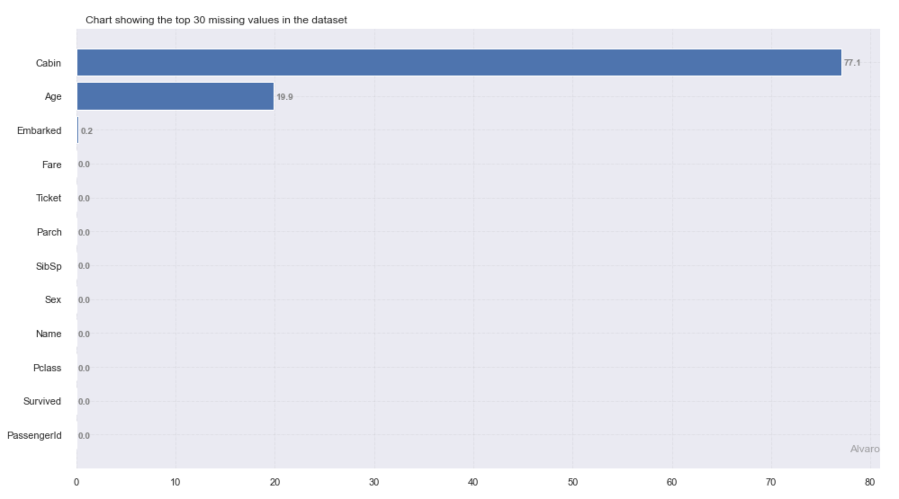

Quickstart to ML with Slik¶
Let’s dive right in!
Let’s start with the classic. You have the titanic.csv file and want to predict whether a passenger survived or not based on the information about the passenger in that file. We know, for tabular data like this, pandas is our friend. Clearly we need to start with loading our data. Slik has a read_file function that reads either CSV, Excel or parquet files
>>> import pandas as pd
>>> import slik
>>> from slik import loadfile as lf
>>> titanic = lf.read_file('titanic.csv')
CSV file read sucessfully
Data has 891 rows and 12 columns
Let’s familiarize ourself with the data a bit; what’s the shape, what are the columns, what do they look like?
>>> titanic.shape (891, 12)>>> titanic.head() PassengerId Survived Pclass Name Sex Age SibSp Parch Ticket Fare Cabin Embarked 0 1 0 3 Braund, Mr. Owen Harris male 22.0 1 0 A/5 21171 7.2500 NaN S 1 2 1 1 Cumings, Mrs. John Bradley female 38.0 1 0 PC 17599 71.2833 C85 C 2 3 1 3 Heikkinen, Miss. Laina female 26.0 0 0 STON/O2. 3101282 7.9250 NaN S 3 4 1 1 Futrelle, Mrs. Jacques Heath female 35.0 1 0 113803 53.1000 C123 S 4 5 0 3 Allen, Mr. William Henry male 35.0 0 0 373450 8.0500 NaN S[5 rows x 14 columns]
So far so good! There’s already a bunch of things going on in the data that we can see here, Lets ask slik to check if there are missing values present in the dataset:
>>> slik.preprocessing.check_nan(titanic,plot=True,verbose=False)
This provides us with lots of information about percentage count of missing values in different columns. In this case, we might have been able to figure this out quickly from the call to head, but in larger datasets this might be a bit tricky. For example we can see that there are several dirty columns with “NaN” in it. let’s try and continue with what slik is doing automatically for now. Now we can handle missing values with slik.
>>> slik.preprocessing.handle_nan(dataframe=titanic,target_name='Survived',strategy='mean',fillna='mode', >>> thresh_x=50,thresh_y=50,verbose=False) Dropping rows with 50% missing value :Number of records dropped from 891 to 891 Dropping Columns with 50% missing value: ['Cabin'] New data shape is (891, 11)In slik, we can also identify each columns present in the data:
>>> slik.preprocessing.identify_columns(titanic,'Survived',id_column='PassengerId',project_path='Titanic') ------------------------- Identifying columns present in the data ------------------------- Target column is Survived. Attribute in target column incldes: [0, 1] Features with high cardinality:['Name', 'Ticket', 'Cabin'] {'cat_feat': ['Name', 'Sex', 'Ticket', 'Cabin', 'Embarked'], 'hash_feat': ['Name', 'Ticket', 'Cabin'], 'id_column': 'PassengerId', 'input_columns': ['Pclass', 'Name', 'Sex', 'Age', 'SibSp', 'Parch', 'Ticket', 'Fare', 'Cabin', 'Embarked'], 'lower_cat': ['Sex', 'Embarked'], 'num_feat': ['Pclass', 'Age', 'SibSp', 'Parch', 'Fare'], 'target_column': 'Survived'} ------------------------- Saving Attributes in Yaml file ------------------------- Data columns successfully identified and attributes are stored in Titanic/metadata
Slik can clean your data in one line of code. The slik.preprocessing.preprocess function cleans your data by removing outliers present in the data, handing missing values, featurizing datetime columns, and mapping columns. The functions saves the preprocessed file in a project path.